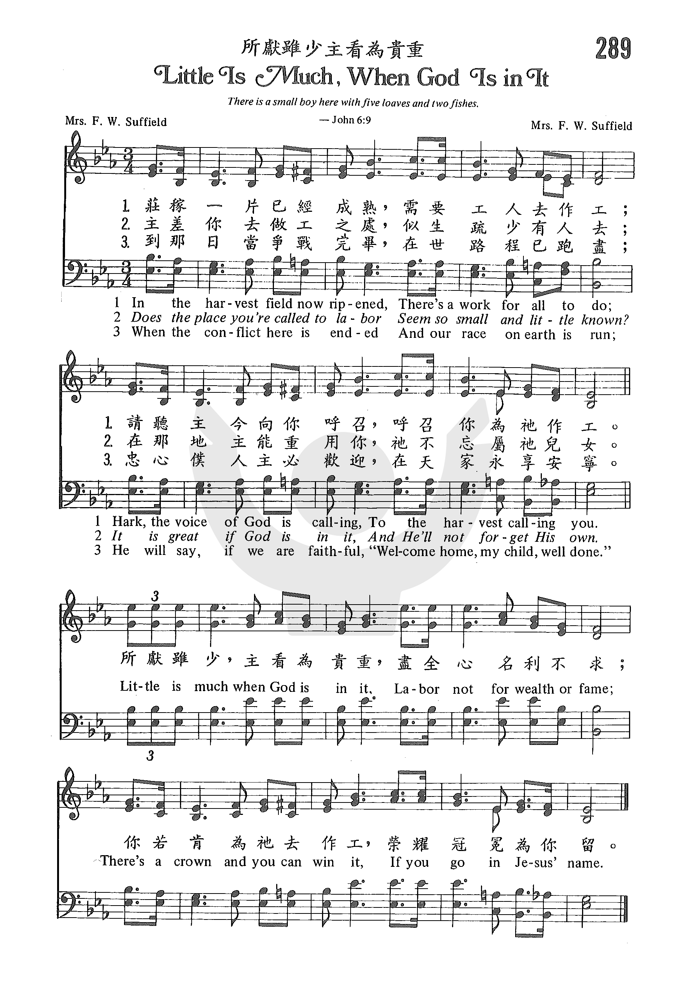

1335 Little is Much 所獻雖少主看為貴重 _Kittie
L. Suffield Fountainview Academy
|
|
|
|
1 In the harvest field now ripened
There’s a work for all to do;
Hark! the voice of God is calling
To the harvest calling you. Refrain:
Little is much when God is in it,
Labor not for wealth or fame;
There’s a crown, and you can win it,
If you go in Jesus’ name.
2 Does the place you’re called to labor
Seem too small and little known?
It is great if God is in it,
And He’ll not forget His own. [Refrain]
3 When the conflict here is ended
And our race on earth is run,
He will say, if we are faithful,
"Welcome home, My child, well done!" [Refrain]
Source: The
Celebration Hymnal: songs and hymns for worship #661
|
庄稼一片已经成熟, 需要工人去作工
请聼主今向你呼召, 呼召你為祂作工 Refrain:
所献虽少，主看為贵重 尽全心名利不求
你若肯為祂去作工 荣耀冠冕為你留
主差你去做工之处 似生疏少有人去
在那地主能重用你 祂不忘属祂儿女
所献虽少，主看為贵重 尽全心名利不求
你若肯為祂去作工 荣耀冠冕為你留
到那日当争战完毕 在世路程已跑尽
忠心僕人主必欢迎 在天家永享安寧
所献虽少，主看為贵重 尽全心名利不求
你若肯為祂去作工 荣耀冠冕為你留 |
|
 
http://www.sooopu.com/html/301/301201.html
https://hymnary.org/hymn/CEL1997/page/633 |
|
|
|
 Little
is Much - Steps To Christ - Fountainview Academy
Little
is Much - Steps To Christ - Fountainview Academy
289 所獻雖少主看為貴重 Little Is Much, When God Is in It
https://www.youtube.com/watch?v=up6Akk_5CL8
|
Short Name: |
Kittie L. Suffield |
|
Full Name: |
Suffield, Kittie L. |
Kittie Louise Suffield,
wife of Frederick W. Suffield
Tune Information
|
Title: |
STEWARDSHIP (Suffield) |
|
Composer: |
Kittie L. Suffield |
|
Meter: |
8.7.8.7 |
|
Incipit: |
32123 23566 53232 |
|
Key: |
D
Major |
|
Copyright: |
Public Domain |
“LITTLE IS MUCH WHEN GOD IS IN IT”
“There is a lad here, which hath five barley loaves, and two small fishes; but
what are they among so many?” (Jn. 6:9)
INTRO.:
A hymn which encourages us to use what we have in the Lord’s service like the
lad with the five barley loaves and two small fishes is “Little Is Much When God
Is In It.” The text was written and the tune (Little Is Much or
Stewardship) was composed both by Kittie Louise Jennett (Mrs. Frederick W.)
Suffield, who was born on Sept. 16, 1884, in New York City, NY. A talented
musician and singer, she travelled with her husband, Fred Suffield, an
evangelist, and they sometimes worked with George Beverly Shea, the song
director for the Billy Graham crusades. Cyberhymnal credits her with five
texts, the other four being “Give Me More of This Love,” “God Is Still on the
Throne,” “The King is Coming in Glory,” and “We Are Well Able,” and the tune for
a song “Don’t Lose the Vision.” “Little Is Much When God Is In It”
is her most famous hymn and is dated 1924. Her death occurred on Oct. 23,
1972, at Los Angeles, CA, and her body is buried in Forest Lawn Memorial Park at
Glendale, CA.

(grave marker for Kittie Suffield)
Among hymnbooks published by members of the Lord’s church during the twentieth
century for use in churches of Christ, the song may be found in the 1971 Songs
of the Church edited by Alton H. Howard with four stanzas in
an arrangement by the editor; and the 1977 Special
Sacred Selections edited by Ellis J. Crum in an arrangement
(with only two stanzas and “ooh”s) by Henry Slaughter and copyrighted in 1967 by
M. Lynwood Smith Publications; as well as the 2007 Sacred
Songs of the Church edited by William D. Jeffcoat with three
stanzas. Other books where I have seen the song include the 1972 Soul
Stirring Songs and Hymns edited by John R. Rice for Sword of
the Lord Publishers, the 1976 Hymns
for the Family of God edited by Fred Bock for Brentwood-Benson
Music, the 1979 Praise! edited
by Norman Johnson for Singspiration Music, the 1987 Worship
His Majesty edited by Fred Bock for Gaither Music, the 1989 Worship
the Lord edited by Arlo F. Newell for Warner Press, the 1993 Sing
to the Lord edited by Ken Bible for Lillenas Publishing, the
1995 Rejoice
Hymnal edited by Vernon M. Whaley for Tempo Music
Publications, the 1997 Celebration
Hymnal edited by Tom Fettke for Word Music/Integrity Music the
1999 Songs
and Hymns of Revival edited by Jack Trieber for North Valley
Publications, and the 2006 Christian
Life Hymnal edited by Eric Wyse for Hendrickson Publishers.
The song emphasizes the need for all Christians to be doing what they can for
the Lord.
I. Stanza 1 tells us to labor in the harvest
“In the harvest field now ripened
There’s a work for all to do;
Hark! the voice of God is calling,
To the harvest calling you.”
-
Jesus said that the harvest is ripe: Jn. 4:35
-
There is a work for all of us to do: Matt. 21:28
-
Therefore, Jesus calls us to labor in His harvest: Matt. 9:37-38
II. Stanza 2 tells us to share God’s love and mercy
“In the mad rush of the broad way,
In the hurry and the strife,
Tell of Jesus’ love and mercy,
Give to them the Word of Life.”
-
Many are hurrying down the mad rush of the broad way: Matt. 7:13-14
-
They need to be told of Jesus’s love and mercy: 1 Jn. 3:16
-
We can do this by giving to them the Word of Life in preaching the gospel:
Mk. 16:15, Acts 8:4
III. Stanza 3 tells us to continue working even in obscurity
“Does the place you’re called to labor
Seem so small and little known?
It is great if God is in it,
And He’ll not forget His own.”
-
All of us are called to labor for the Lord in some way or another: 1 Cor.
15:58
-
Sometimes we may labor in a place that is small and little known, but even
there Christ has promised to be with us: Matt. 28:18-20
-
And God is not unrighteous to forget our labor, wherever it may be: Heb.
6:10
IV. Stanza 4 tells us to pray even when we cannot do anything else
“Are you laid aside from service,
Body worn from toil and care?
You can still be in the battle,
In the sacred place of prayer.”
-
Sometimes we are laid aside from service because our bodies are worn from
toil and care as we grow older: Eccl. 12:1-5
-
However, we must not forget that there is still a battle raging in the
spiritual realm: Eph. 6:12
-
And if we cannot do anything else, we can stand in the sacred place of
prayer: Eph. 6:18-20
-
Stanza
V. Stanza 5 tells us to be looking forward to the reward for our labor
“When the conflict here is ended,
And our race on earth is run,
He will say, if we are faithful,
‘Welcome home, my child–well done.'”
-
Someday for each of us our conflict here will be ended in death, when our
race has been run: Heb. 9:27, 12:2
-
We need to be faithful in our labor and service to the Lord: Rev. 2:10
-
If we are, He will say, “Welcome home, my child, well done”: Matt. 25:21
CONCL.:
The chorus reminds us of God’s blessings on those who serve Him faithfully,
whether with little or much.
“Little is much when God is in it!
Labor not for wealth or fame.
There’s a crown, and you can win it,
If you go in Jesus’ name.”
Obviously, the greater the talents and opportunities that a person has, the more
God expects of him. However, even if we have few talents and
opportunities, the Lord still expects us to use what we have and promises that
“Little Is Much if God Is in It.”
https://hymnstudiesblog.wordpress.com/2020/07/19/little-is-much-when-god-is-in-it/
Words: Kittie Louise Jennett Suffield (b. Sept. 16,
1884; d. Oct. 2, 1972)
Music: Kittie Louise Jennett Suffield
Links:
Wordwise Hymns
The Cyber
Hymnal
Note: In the Wordwise Hymns link, there are some interesting stories
regarding this 1924 song, and the life and ministry of Mr. and Mrs.
Suffield.
In the Word of God, it isn’t difficult to find
illustrations and examples of the little-is-much principle. It’s a
reminder that when God is with us, and we are in His will, small and
even insignificant resources can accomplish great things. And, of
course, the Lord delights to use such things to accomplish His purpose.
The weaker we are, the greater the glory that will redound to Him. For
example:
¤ Moses’ rod, used when he was tending sheep, later wielded at
the command of the Lord accomplished the deliverance of Israel, and
the provision of water in the wilderness (Exod. 4:2; 14:15-16;
17:6).
¤ Gideon’s force of three hundred men defeated a huge army of
135,000 Midianites (Jud. 7:19–8:10).
¤ One stone shot from David’s sling defeated a seemingly
invincible giant, and caused the whole army of the Philistines to
flee (I Sam. 17:49-51).
¤ In the book of Esther, in the providence of God, a beauty
contest and a king’s insomnia were used to preserve the people of
Israel (Est. 2:3-4; 6:1-10).
¤ In the hands of Jesus, one boy’s lunch fed 5,000 men, plus
women and children (Mk. 6:32-44).
In each case, these examples represent common everyday things, which
the intervention of God turned into something extraordinary. That is the
thrust of Kittie Suffield’s gospel song. That the Lord takes ordinary
people, and the resources they have–though weak and inadequate in human
assessment, and works in and through them, for His glory and the greater
good of all.
The natural corollary of that–the other side of the coin– is that
there is “a work for all to do” in God’s harvest field (CH-1). No one
can say they’re useless to the Lord. And Mrs. Suffield addresses the
problem of living in a small, out-of-the-way location. In Canada, 6.5
million people (19% of the population) live in small rural communities.
But the people there still need the Lord!
CH-3) Does the place you’re called to labour
Seem too small and little known?
It is great if God is in it,
And He’ll not forget His own.
Little is much when God is in it!
Labour not for wealth or fame.
There’s a crown—and you can win it,
If you go in Jesus’ name.
Another group that worries about not being able to serve the Lord is
the elderly, and those who are shut-in and less mobile than perhaps they
used to be. Being out and about is difficult, if not impossible for
them. Teaching a Sunday School class, or singing a solo in church is
beyond them. But what about the ministry of prayer? How much those on
the front lines of ministry need the support of faithful prayer
warriors. That is a great service for God.
CH-4) Are you laid aside from service,
Body worn from toil and care?
You can still be in the battle,
In the sacred place of prayer.
There is a great day coming when the Lord Jesus will call the saints
into His presence, and reward them for faithful service. How wonderful,
in that day, to hear His “well done” Perhaps, in that day, some work
that has received public attention and acclaim will not receive as great
a reward as a more obscure service, faithfully performed.
I can recall being with a friend one time, when an older gentleman
walked by–one I knew slightly. My friend said, “There goes one of the
princes of the earth.” Why? What had he done? He had lovingly cared for
his sick and disabled wife over many years, and sacrificed greatly to
fill their home with the love of Jesus. That was news to me! I hadn’t
heard about it. But God knew, and will honour him for it at Christ’s
return.
CH-5) When the conflict here is ended
And our race on earth is run,
He will say, if we are faithful,
“Welcome home, My child; well done!”
Questions:
1) Can you think of common or simple things in your own life that could
be used for the Lord in some special way?
2) Are there men or women in your acquaintance who are serving the
Lord faithfully in some way that is little known by most?
Links:
Wordwise Hymns
The Cyber
Hymnal
https://wordwisehymns.com/2012/12/03/little-is-much-when-god-is-in-it/